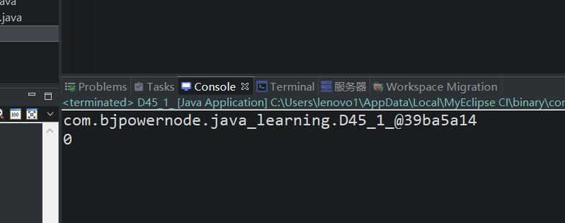
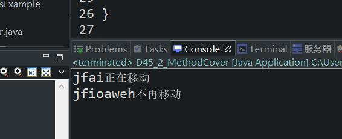

原文连接:https://www.cnblogs.com/ruigege0000/p/11746426.html
一、Java语言中假设一个类没有显式的继承任何类，那么该类默认继承Java SE库中提供的java.lang.Object类
1.快捷键：Ctrl + shift + T：可以在Myeclipse中查找类
2.快捷键：Ctrl + shift + R：可以在Myeclipse中查找资源
继承类举例：
package com.bjpowernode.java_learning;
public class D45_1_ extends Extend1 {
public static void main(String[] args) {
D45_1_ d1 = new D45_1_();
System.out.println(d1.toString());//说明继承了JavaSE默认的类
System.out.println(d1.a);//继承了Extend1这个类，其实继承就是指把父类的代码都拿到子类里面
//不能继承构造方法和私有实例变量
}
}
class Extend1 {
int a;
}
回顾一下：
方法重载和返回值类型，和修饰符列表是没有关系的。
方法重载的条件：在同一个类中；方法名相同；参数列表不同（包括顺序、类型、个数）
二、方法的覆盖
1.方法覆盖又被称为方法重写，英文名称：override\overwrite
2.什么时候使用方法重写
当父类中的方法已经无法满足当前子类的业务需求，子类有必要将父类中继承过来的方法机型重新编写，这个重新编写的过程称为方法重写/方法覆盖
3.什么条件下才会发生方法覆盖
（1）方法重写发生在具有继承关系的父子类之间；
（2）返回值类型相同，方法名相同，形式参数列表相同
（3）方法重写的时候，访问权限不能变得更低，比如：原来的函数是public的，继承的类必须比public更大，或者平级，不能是protected这种更小的权限
（4）方法重写的时候，抛出异常不能更多，可以更少或一样多。（这个后面再讲）
4.建议方法重写的时候尽量复制粘贴，不要编写，容易出错，导致没有产生覆盖。
5.注意点：
（1）私有方法不能继承，所以不能覆盖；（2）构造方法不能继承，所以不能覆盖；（3）静态方法不存在覆盖；（4）覆盖只针对方法不包含属性变量。
package com.bjpowernode.java_learning;
public class D45_2_MethodCover {
public static void main(String[] args) {
Animal1 a1 = new Animal1();
a1.name = "jfai";
a1.move();
Bird1 b1 = new Bird1();
b1.name = "jfioaweh";
b1.move();
}
}
class Animal1{
String name;
public void move() {
System.out.println(this.name+"正在移动");
}
}
class Bird1 extends Animal1{
public void move() {
System.out.println(this.name+"不再移动");//方法重写，
}
}
6.生成override的快捷方法：
source-生成方法覆盖
五、源码：
D45_1_InheritClassExample.java
D45_2_MethodCover.java
地址：
https://github.com/ruigege66/Java/blob/master/D45_1_InheritClassExample.java
https://github.com/ruigege66/Java/blob/master/D45_2_MethodCover.java
2.CSDN：https://blog.csdn.net/weixin_44630050（心悦君兮君不知-睿）
3.博客园：https://www.cnblogs.com/ruigege0000/
4.欢迎关注微信公众号：傅里叶变换，个人公众号，仅用于学习交流，后台回复”礼包“，获取大数据学习资料